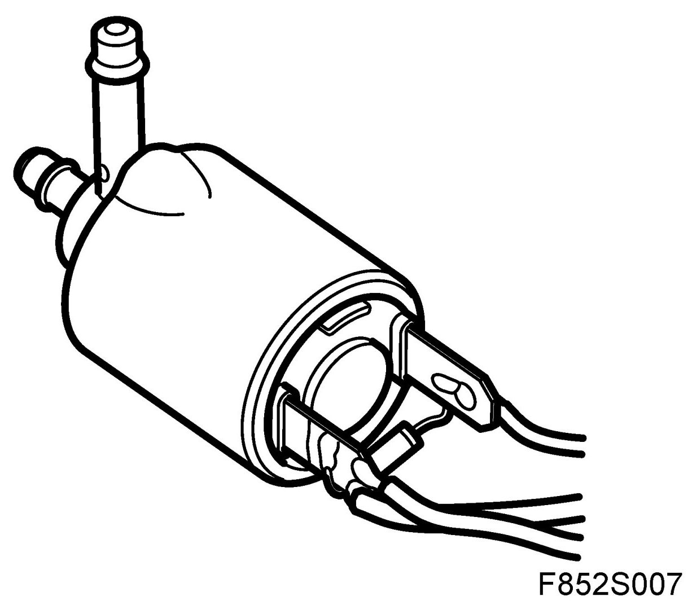

Power Seat Solenoid: Diagrams
Valve, Lumbar Support (357v)
Location
Valve, lumbar support (357v)

Main task
Expel air from the air cushion for the backrest lumbar support.
Type
Solenoid valve. The valve is closed in normal state.
Connect
The solenoid valve pin 2 is connected to ground and is powered from fuse 27 in REC via the lumbar support switch (357o) pin 4. When the switch is closed, the valve is powered and opens to release air pressure from the lumbar support air cushion.